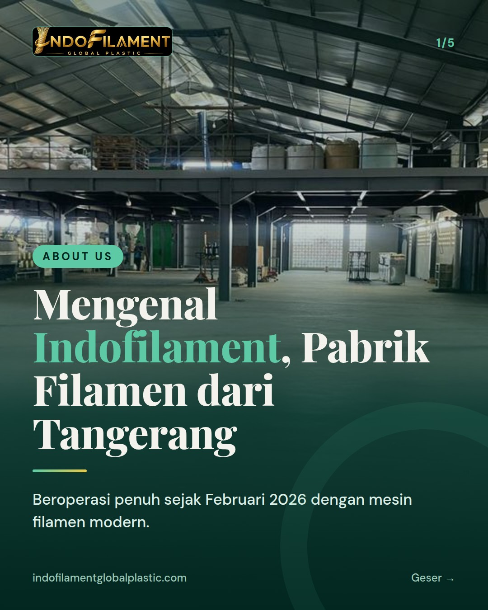
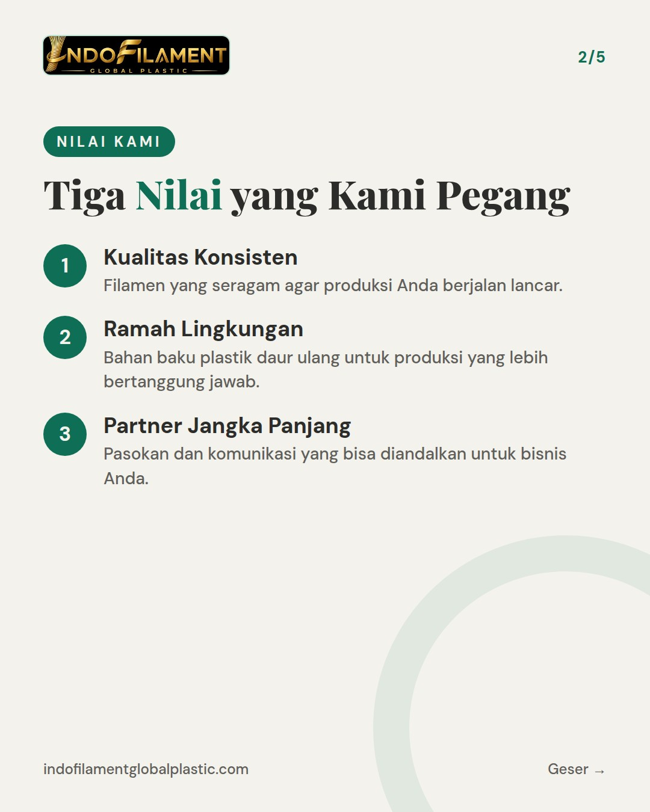
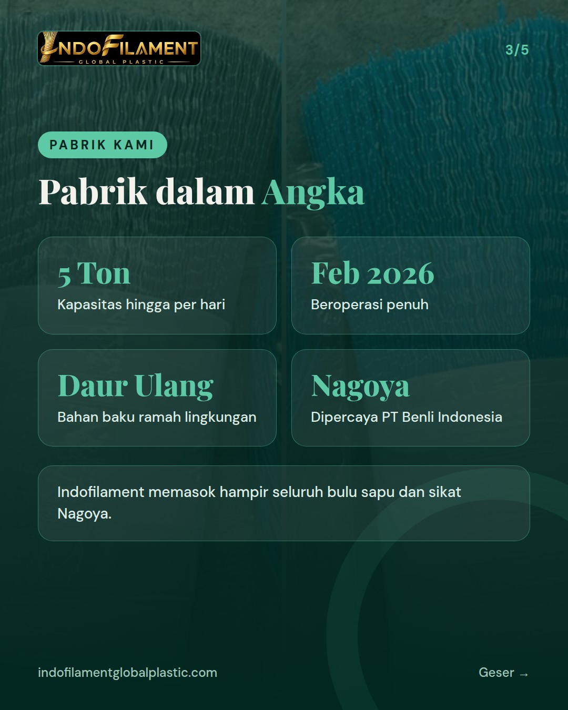
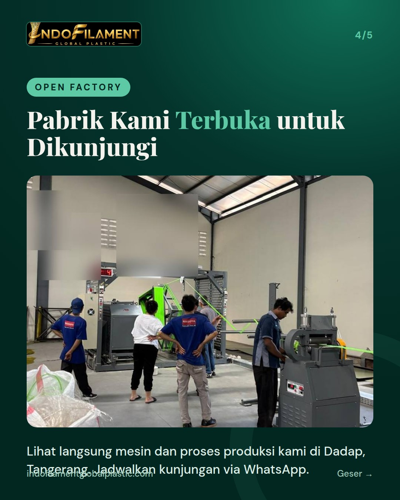
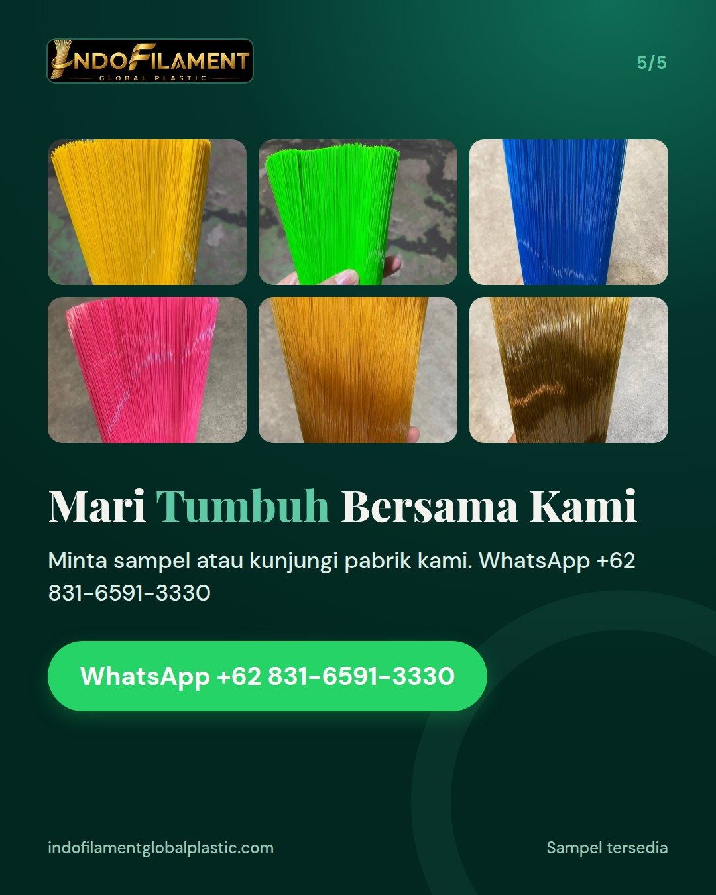

PERKENALAN 2 dari 3 - ABOUT US (tentang kami). Kicker cover: About Us. Isi: pabrik di Tangerang beroperasi penuh sejak Februari 2026 dengan mesin filamen modern, kapasitas hingga 5 ton per hari, bahan baku plastik daur ulang yang ramah lingkungan, dipercaya merek Nagoya (PT Benli Indonesia), pabrik terbuka untuk dikunjungi. Nilai kami: kualitas konsisten, ramah lingkungan, partner jangka panjang. Caption: bagian kedua dari seri perkenalan akun.





Siapa di balik filamen bulu sapu dan bulu sikat Anda? 🏭 Inilah bagian kedua dari seri perkenalan kami. PT Indofilament Global Plastic adalah pabrik filamen nilon di Tangerang yang beroperasi penuh sejak Februari 2026. Dengan mesin filamen modern, kapasitas produksi kami mencapai hingga 5 ton per hari untuk melayani pasar domestik dan ekspor. Bahan baku kami adalah plastik daur ulang yang ramah lingkungan. Kami juga dipercaya merek Nagoya milik PT Benli Indonesia. Sejak Februari 2026, kami memasok hampir seluruh bulu sapu dan sikat Nagoya. Bagi kami, kualitas konsisten, ramah lingkungan, dan menjadi partner jangka panjang adalah nilai yang selalu kami jaga. Pabrik kami terbuka untuk dikunjungi. Minta sampel via WhatsApp +62 831-6591-3330 atau DM kami. 📩 For export buyers: our Tangerang factory has been fully operational since February 2026, with capacity of up to 5 tons per day. Visits and samples are welcome. #bulusapu #bulusikat #filamen #pabriksapu #pabrikfilamen #madeinindonesia #broomfilament #brushfilament #nylonfilament #privatelabel #tangerang #ramahlingkungan